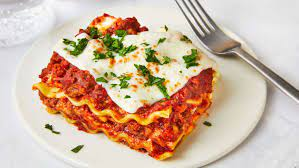

| Meal Type | Recipe | Image | Ingredients | Instructions |
|---|---|---|---|---|
| Breakfast | Lasagna |  |
|
1. Cook lasagna noodles according to package instructions. 2. In a skillet, brown ground beef with onion and garlic. Drain excess fat. 3. In a bowl, mix together ricotta cheese, Italian seasoning, salt, and pepper. 4. Layer lasagna noodles, meat sauce, ricotta mixture, and mozzarella cheese in a baking dish. Repeat layers. 5. Bake in a preheated oven at 350°F (175°C) for 30-40 minutes or until bubbly and golden. |
| Dessert | Pudding |
|
1. Pour milk into a mixing bowl. 2. Add instant pudding mix. 3. Whisk together for 2 minutes until well combined and thickened. 4. Pour into serving dishes and refrigerate for at least 1 hour before serving. 5. Optional: Top with whipped cream or fruit before serving. |